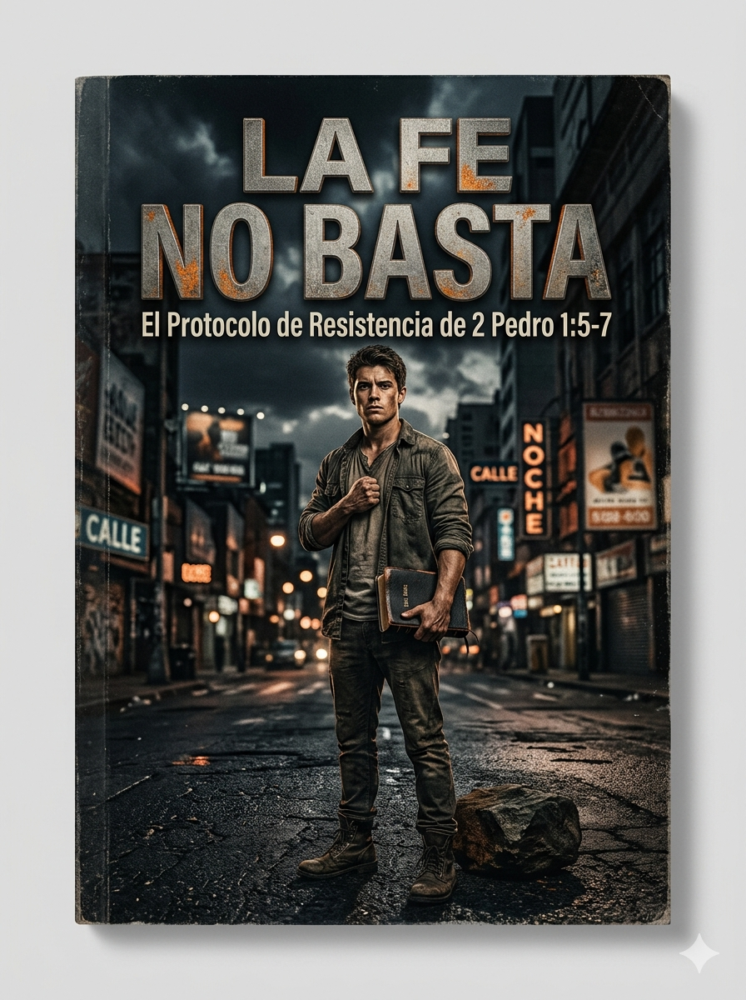
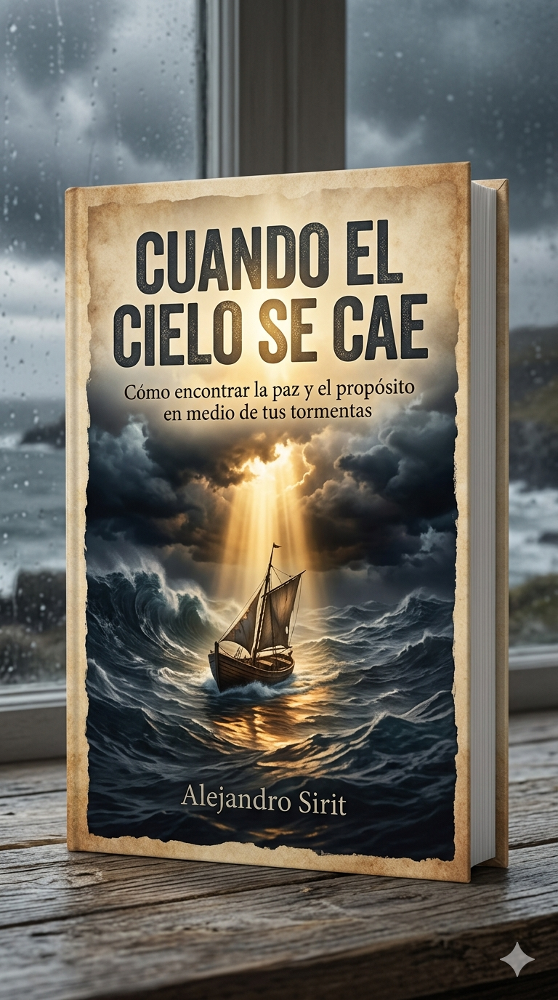
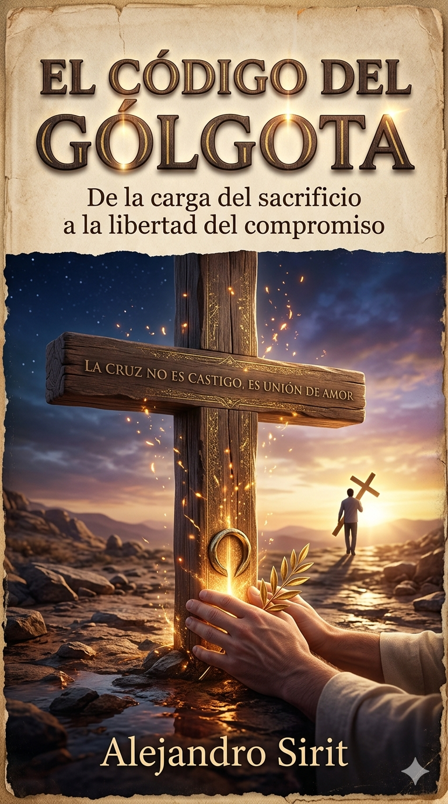
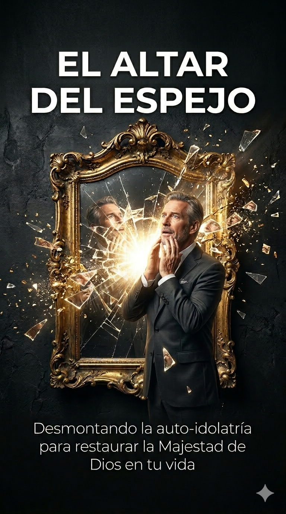

Esta casa no predica eslóganes.
La fe que no añade se vuelve estéril. El mindfulness no es dominio propio. La neurociencia no regenera. El texto manda; lo demás se sienta atrás.
Ver el pasaje entero, en voz alta.
Entorno — quién escribe, a quién, qué viene antes.
Revelación — lenguas. No el influencer.
Doctrina — Dios, pecado, Cristo, pueblo.
Argumento — la objeción que duele.
Decisión — un acto esta semana, o una confesión.
El taller no es un versículo.
Es el lugar donde un pasaje se abre hasta que exige algo. Hoy hay un corte publicado. Los demás entran con las reediciones.
La fe que no añade
2 Pedro 1 no es un poster de virtudes. Es una cadena contra la libertad barata. Siete eslabones. Un solo pendiente.
Leer el corte →
Obras
Éfata ya está en Amazon. El resto se reescribe bajo este sello. Las tapas ya confrontan.

La fe no basta
Cuando el cielo se cae
El código del Gólgota
El altar del espejo